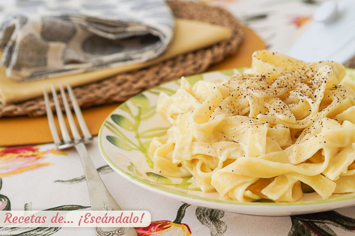

Ingredientes
- 400 gr de fetuccini
- 300 ml de nata
- 80 gr de queso parmesano.
- 60 gr de mantequilla sin sal.
- Pimienta negra molida y sal.
Pasos
Primer paso:
En primer lugar preparamos los fetuccini: pon abundante agua en una olla (que después cubra de sobra la pasta) a fuego fuerte hasta que hierva. Cuando hierva, incorpora una cucharadita de sal y los fetuccini, y cuando vuelva a hervir deja que se cueza durante los minutos que indique el paquete.
Segundo paso:
Mientras podemos preparar la salsa Alfredo. Ralla el queso parmesano utilizando un rallador o robot.
Tercer paso:
Pon en un cazo la mantequilla a fuego medio-suave y, cuando se haya derretido, incorpora la nata.
Cuarto paso: Espera a que hierva y cuando eso ocurra añade el queso parmesano rallado, un poco de sal y pimienta negra molida y cocínalo todo junto 3 minutos.
Quinto paso:Puedes cocinarla algún minuto más si la quieres más espesa, y si espesa demasiado para tu gusto siempre puedes añadir un poco más de nata o leche. Pruébala por si tienes que rectificarla de sal.
Sexto paso:Cuando se cumpla el tiempo de la pasta escúrrela y vuelve a echarla en la olla. Vierte por encima la salsa Alfredo y mézclala bien. Otra opción es servir la pasta en los platos de los comensales y después servir la salsa por encima. Si la salsa la habías hecho con antelación y estaba un poco fría, caliéntala de nuevo en el cazo 2 o 3 minutos a fuego suave.
Séptimo paso:Espolvorea por encima un poco de pimienta negra molida cuando ya esté la pasta servida en los platos.